1940s–1950s
Wartime Utility
Postwar Femininity
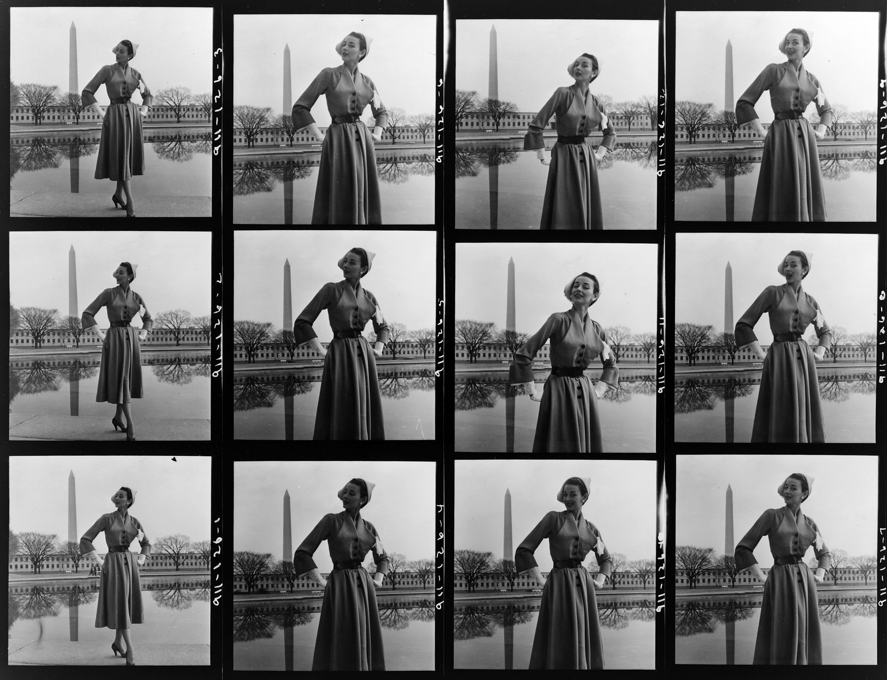
Tailored Menswear: From Wartime Utility to Postwar Style (1940s)
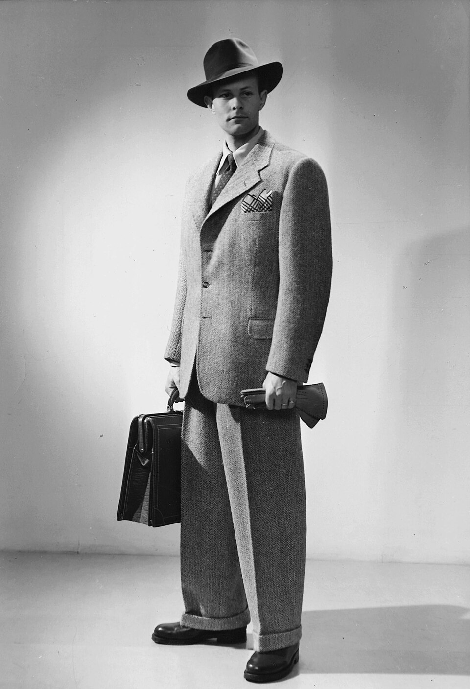
Holmen, Erik. Men's fashion, c. 1940-1945.
Nordic Museum.
Nordic Museum.
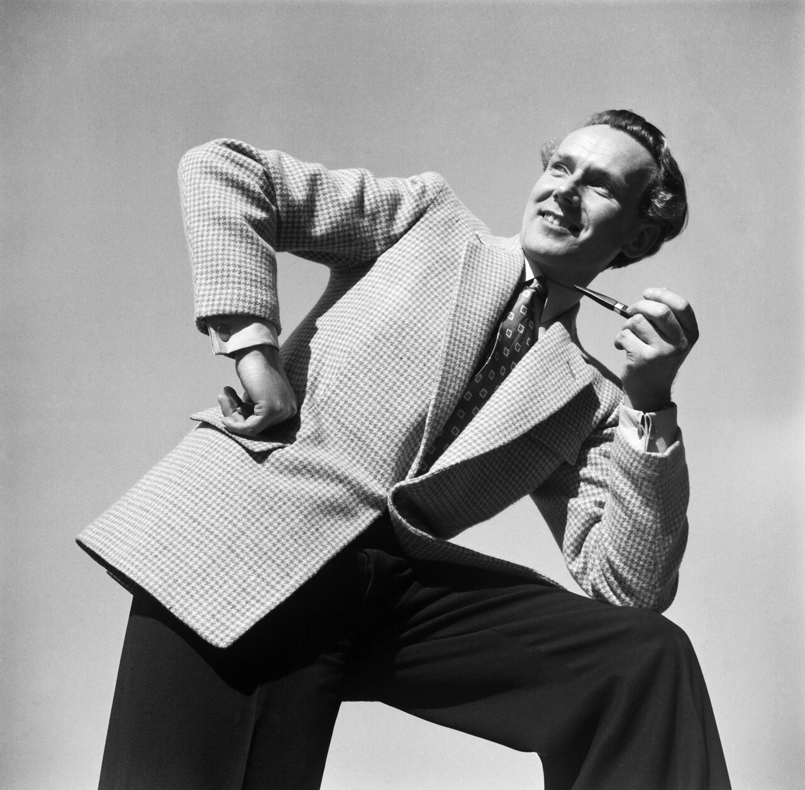
Saarinen, U. A. "Men's Fashion" 1948.
Finnish Heritage Agency.
Finnish Heritage Agency.
Backstage Fashion Preparation (1947)
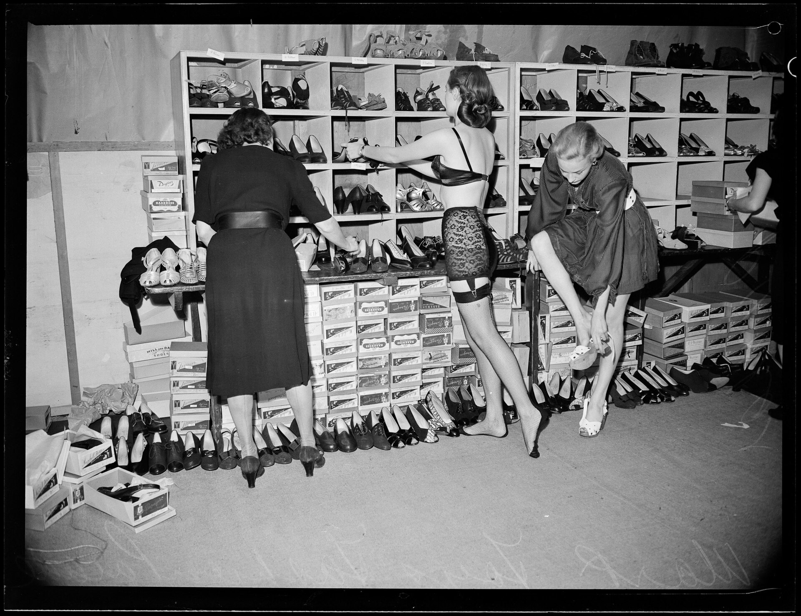
Olson, Ray. Backstage, Mark Foy's fashion parade, 1947.
State Library of New South Wales.
"Sweater Girls" of the 1940s and 1950s
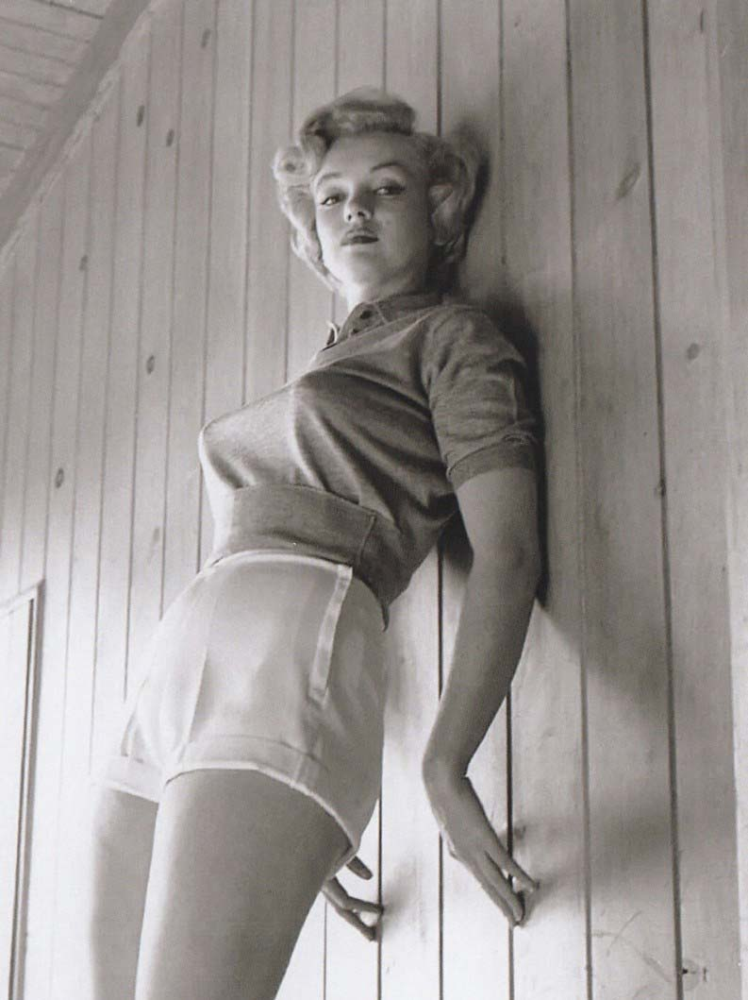
Marilyn Monroe photographed in 1951 by Larry Barber Jr.
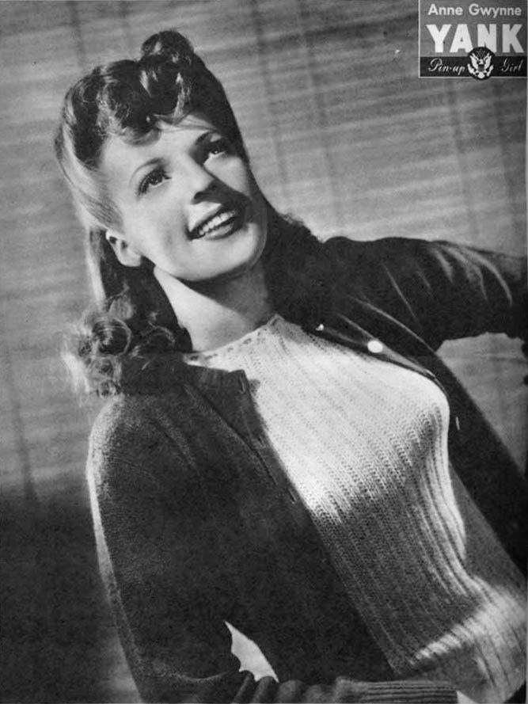
Ann Gwynne pin-up photograph, 1943. Yank, the Army Weekly.
Rise of Women's Levi's Jeans (1950s)
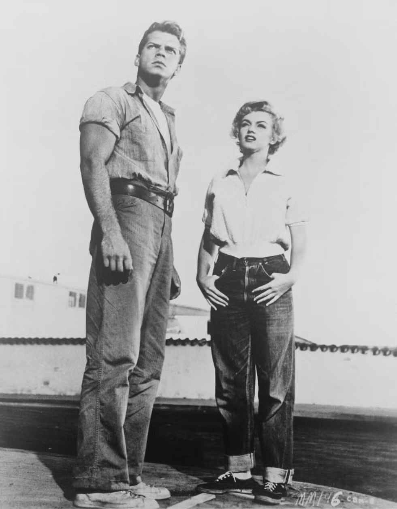
Marilyn Monroe wearing cuffed jeans in 'Clash by Night,' 1952. Elle.
Postwar Elegance: New York Silhouette (1949-1955)
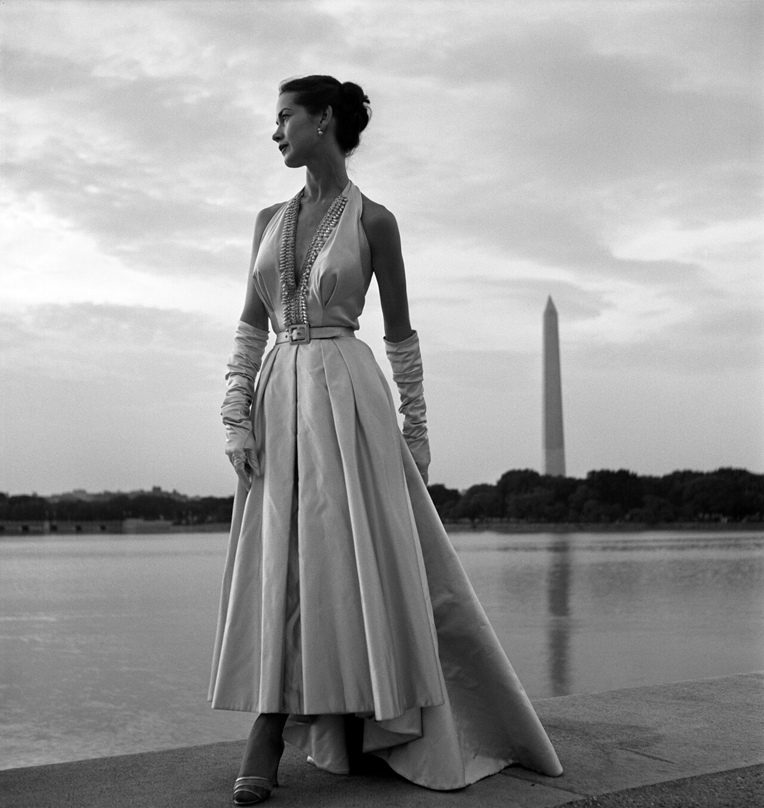
Friselli, Toni. Fashion Model,
Washington, D.C., 1949. Library of Congress.
Washington, D.C., 1949. Library of Congress.
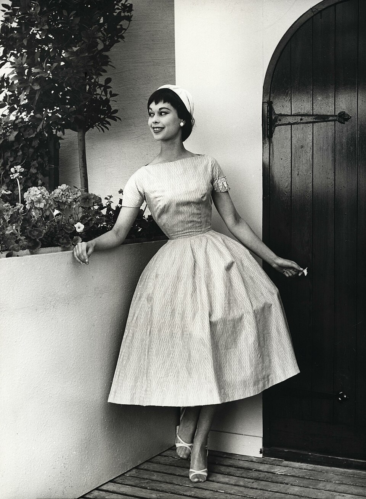
Nordin, L. (1955). Fashion model at H55 exhibition,
Helsingborg. Nordic Museum.
Helsingborg. Nordic Museum.
Glamour and Everyday Fashion (Late 1950s)
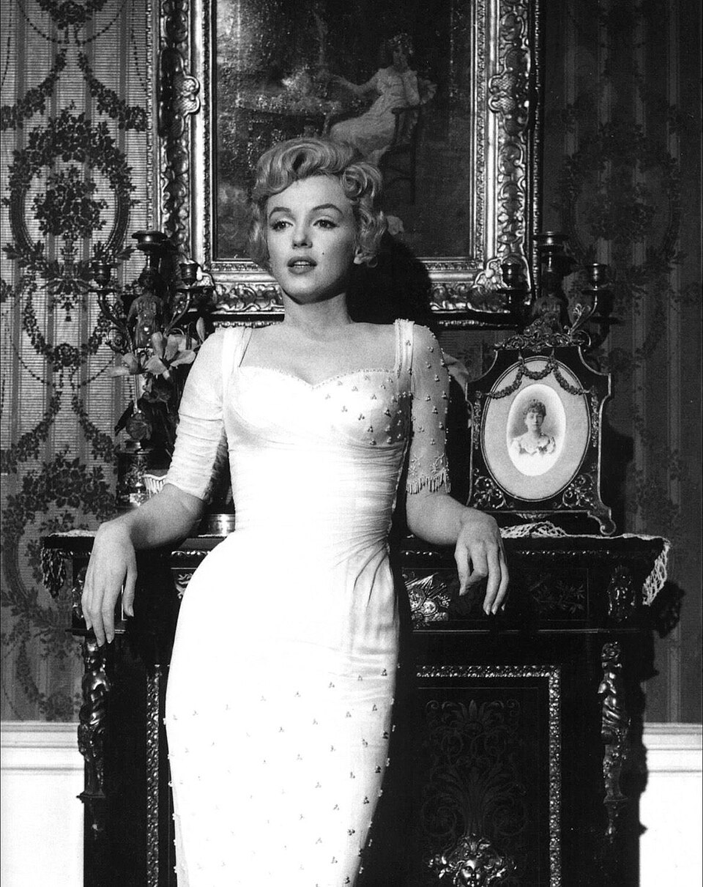
Marilyn Monroe, promotional photograph for
'The Prince and the Showgirl,'1957, Milton H. Greene.
'The Prince and the Showgirl,'1957, Milton H. Greene.
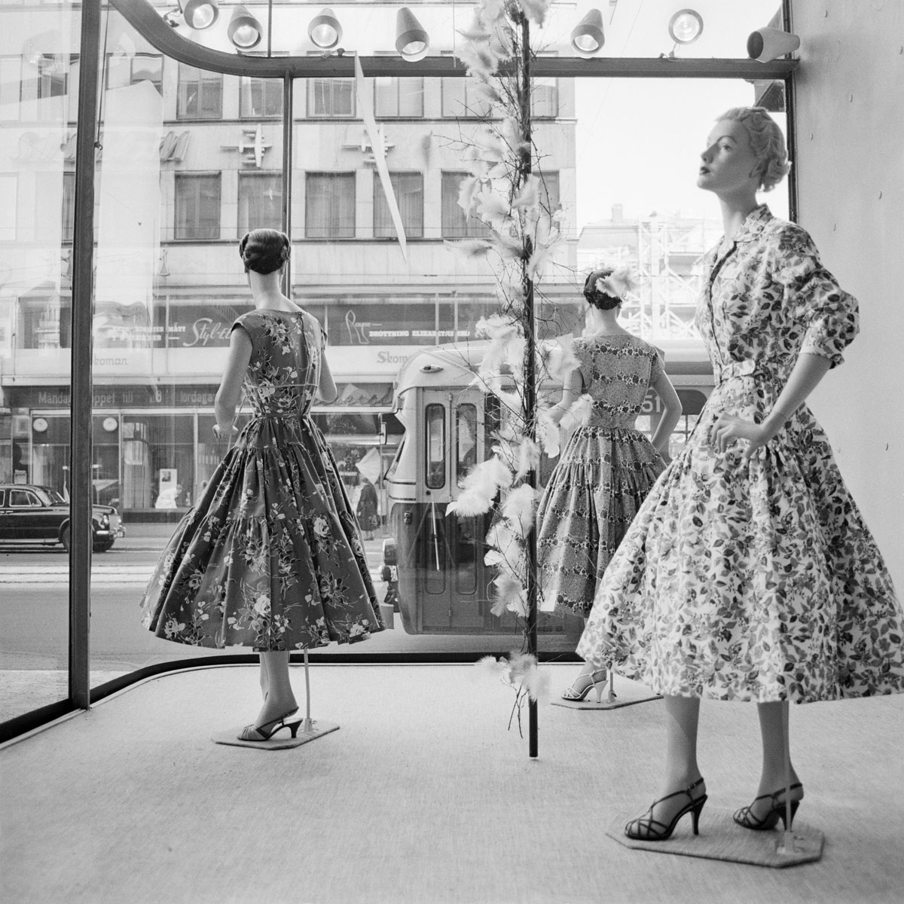
Storefront mannequins, Stockholm, 1957,
Ekelund, Gunnar, Stockholm Transport Museum.
Ekelund, Gunnar, Stockholm Transport Museum.